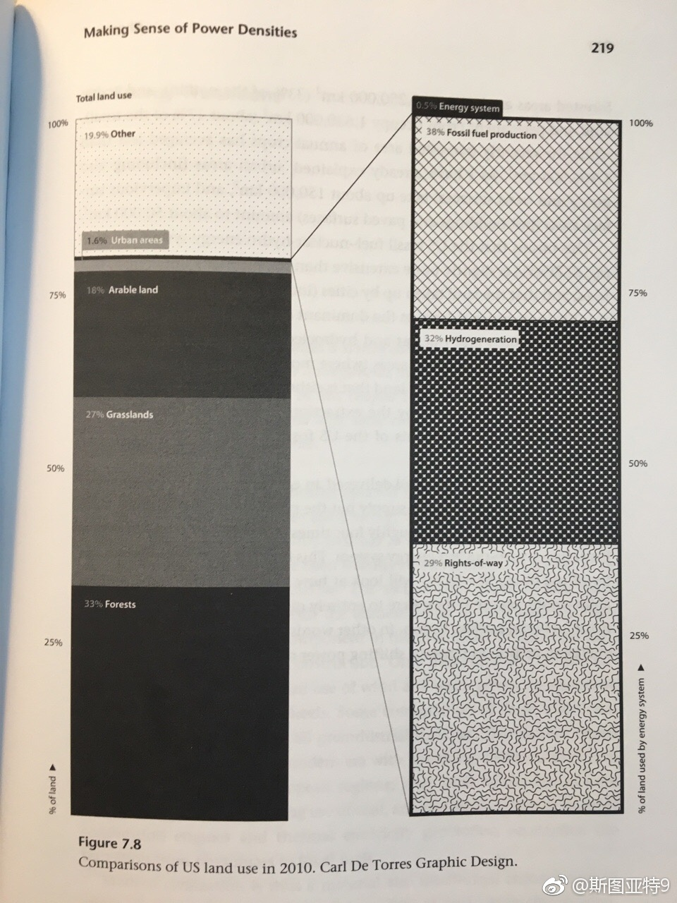

《Power Density》这书 网页链接 ，感觉全书的观点就是这张表格。按照作者的计算，可再生能源（太阳能、风力、水电、地热等）的能源密度（单位土地面积的能源产出率）比现有的主要能源（煤、石油、天然气、核电）低两三个数量级。现在生产和运输能源占用的面积只占地表面积的很小一部分，但如果要将能源结构转型为可再生能源为主的话，需要的地表面积是难以大到难以承受的。这是能源转型的巨大挑战。
现在还可以简单地说交流电占领世界吗？的确，家庭和工业电源插口提供交流电，但各种电池基本都输出直流电。大功率电器，如点灯、冰箱、洗衣机、电视机、空调等基本都是用交流电，但现在对人们同样重要的另一些电器则通常使用直流电——手机、平板、计算机、照相机等——可以说多数使用数字电路的设备或组件都在使用直流电。而长途输电也通常使用直流电。
Pep man's C(sh)ity... S(sh)itting on the wall...@新浪体育:动画恶搞曼城欧冠联赛出局，听到一半我竟然跟着唱出来了…… 新浪体育视频的秒拍视频 15万次播放 02:28
 网页链接 ，感觉全书的观点就是这张表格。按照作者的计算，可再生能源（太阳能、风力、水电、地热等）的能源密度（单位土地面积的能源产出率）比现有的主要能源（煤、石油、天然气、核电）低两三个数量级。现在生产和运输能源占用的面积只占地表面积的很小一部分，但如果要将能源结构转型为可再生能源为主的话，需要的地表面积是难以大到难以承受的。这是能源转型的巨大挑战。
网页链接 ，感觉全书的观点就是这张表格。按照作者的计算，可再生能源（太阳能、风力、水电、地热等）的能源密度（单位土地面积的能源产出率）比现有的主要能源（煤、石油、天然气、核电）低两三个数量级。现在生产和运输能源占用的面积只占地表面积的很小一部分，但如果要将能源结构转型为可再生能源为主的话，需要的地表面积是难以大到难以承受的。这是能源转型的巨大挑战。